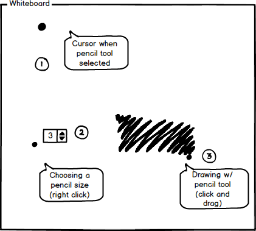

2.7.4. Pencil Tool
To use the pencil tool, the user moves the cursor over to the 'Drawing Tools' window and clicks on the pencil tool icon.
As shown in Figure 1, once the pencil tool is clicked, the system responds by highlighting the tool and displaying the
name of the tool in small text under the cursor.

Figure 1: Pencil tool icon.
Once the pencil tool is selected, the cursor changes into that tool icon representing that the user is ready to
user the tool as shown below in Figure 2 (1). (2) shows the user selecting a size for the pencil by right-clicking and
clicking the up and down arrows to select the desired pencil size. Once the desired pencil size is reached, the user
left-clicks to finalize pencil size. Finally in (3), the user clicks and drags to draw using the pencil tool.

Figure 2: Using the pencil tool to draw.
Prev: text-tool
| Next: hand-tool
| Up: drawing-overview
| Top: index